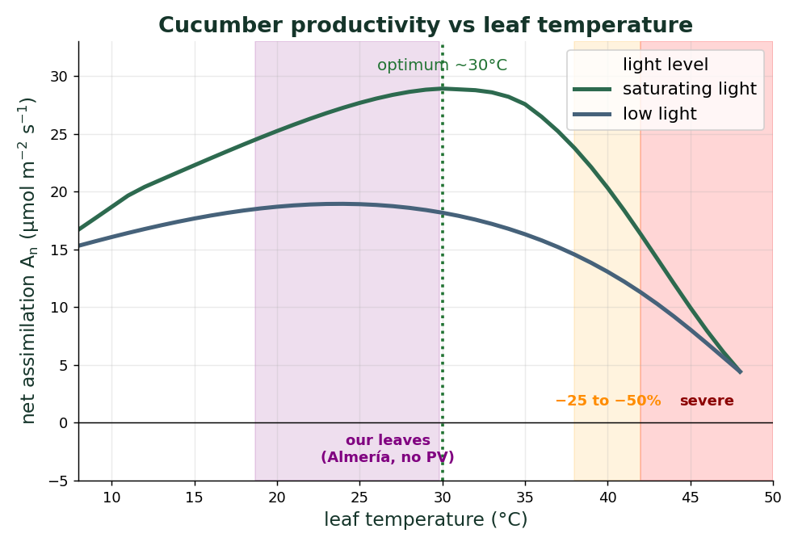

Why The problem
Crop growth in a greenhouse is tied to the PAR reaching the canopy. A simple 1D Beer-Lambert model predicts canopy-level productivity well in a conventional greenhouse (Pao 2021). But roof-mounted photovoltaic panels make the light strongly heterogeneous: measurements report a 4.5x difference between under-panel and far rows at 50% coverage. A 1D average can no longer capture the per-leaf response, so we built a per-leaf, layout-aware model.
Model How it works
The light reaching every single leaf is resolved by two backward Monte Carlo passes: one samples the sky hemisphere (diffuse), the other casts rays toward the sun (direct), including multiple scattering between leaves. It is validated against ArchimedLight within 2%.

These per-leaf fluxes drive a coupled balance, exchanged every 15 min: a greenhouse energy and water ODE (air, cover, floor, walls, soil), and PlantBiophysics which solves, for each leaf, the energy balance (Monteith), photosynthesis (Farquhar) and stomatal conductance (Medlyn).
Setup Four PV layouts
The same cucumber canopy is run under four roof layouts at equal 25% coverage: no PV, five strips, a single continuous band, and a checkerboard.

Result 1 Light is heterogeneous within one plant

Result 2 The layout sets the cost

Result 3 The crop stays thermally safe

Take-away In short
A generic, validated platform couples Monte Carlo light, an FSPM and PV shading. It resolves the spatial heterogeneity a 1D model averages out, and shows that how the panels are arranged matters as much as how much roof they cover.